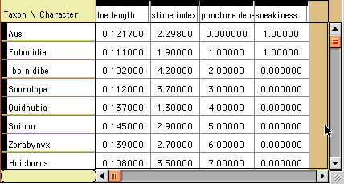

|
|||||||||||||||
|
|
|
(updated August 2005)

MesquiteTables are scrollable spreadsheet-like tables, with a matrix of cells internally, and titles for the columns and rows. They are used for data matrices, list windows, cost matrix editors, state names editors, and so on. Subclasses can determine specific behavior, such as whether a cell gets selected when it is touched, whether columns are of adjustable widths, and so on.
Generally, a subclass of MesquiteTable will override the basic cell drawing routine to take control over how cells are drawn. There are methods to inform the table that a cell was touched. In response, the table might either call the method to select a cell, or to edit it. If it chose to edit it, it may have its method returnedMatrixText (for example) which will report on the results of the user's editing.
Tables consist of a RowNamesPanel to show the row names, a ColumnNamesPanel to show the column names, a CornerPanel for the upper left corner, and a central MatrixPanel in which the entries for each rowXcolumn are shown.